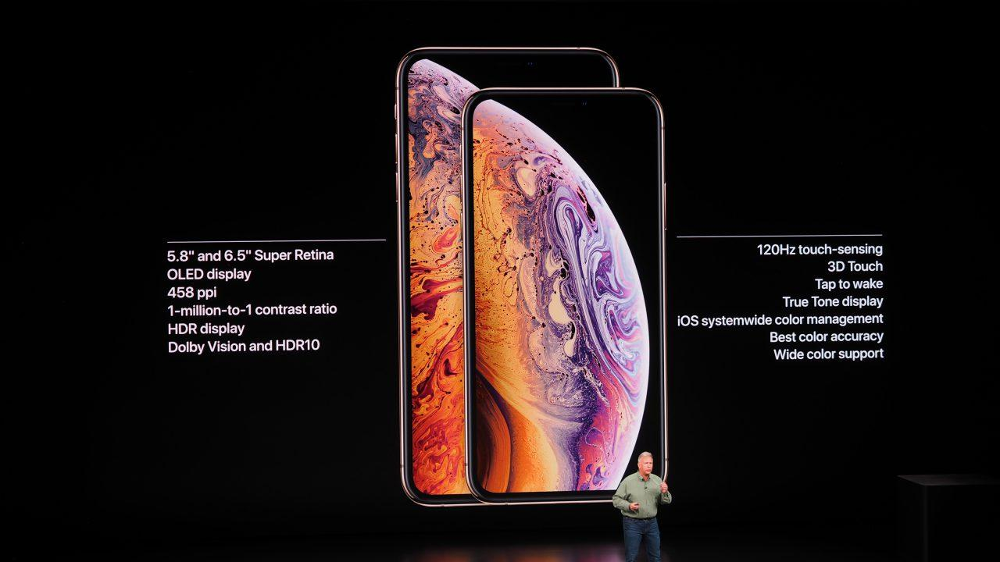
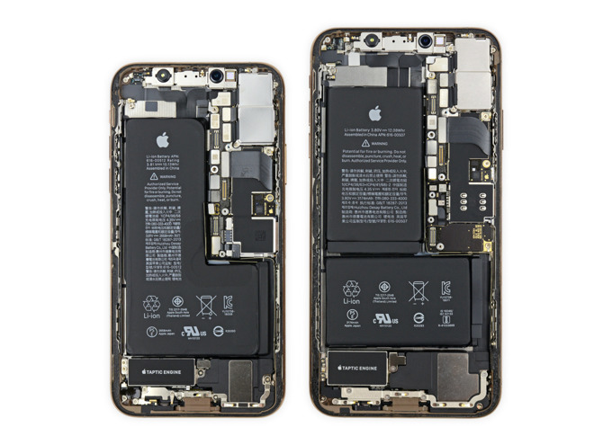

First off we have to compare the specifications to android phones in the similar price range.
As we all know iPhones are absolute monsters when it comes to raw performance. The in-house processors that Apple designs for the iPhone are
way ahead of the industry. For example when we compare the latest Apple's A13 Bionic Chip to the likes of the Snapdragon 855 Apples processors smashes it out of
the water.
Lets take a look at the specifications of the A13 Bionic
8.5 Billion Transistors. (Yes Billion!)
Second Generation 7nm Process for high efficiency
6-Core CPU, 6 Thread CPU
Base CPU Frequency of 1.8GHz; Max CPU Boost of 2.66GHz
A13 Bionic GPU with 154.9 GFLOPS of computing power
Apple A13 Chip when compared with other Apple processors(Note: A12X is the chip on the iPad Pro.)
The iPhone's Display.

The display of the iPhone is a straightforward debate when it comes to using it for gaming. WE NEED 120HZ! The iPhone has a measly 60HZ refresh rate which is
near obsolete in 2020. Most android phones are now switching over to at least 90Hz screens such as Oneplus and Samsung. Now iPhone has this gimmick feature
called 120Hz touch sample rate. This is not exactly 120Hz but it is more about how fast it responds to touch. So in reality it makes using the iPhone more smooth but the rate information
is getting updated on the screen is the same is 60Hz. In conclusion, 120Hz is a must have for iPhones in this day and age.
Battery Life of the iPhone

The battery life of the iPhones are just phenomenal. The 7nm process improves the efficiency of the chip by up to a staggering 40%.